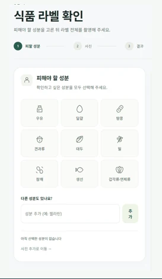
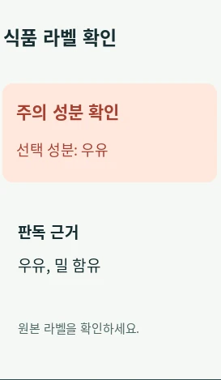

Quick scan. Smart bite.
먹기 전,
내 기준으로 확인.
한국 포장식품의 라벨을 찍고, 내가 피하고 싶은 성분이 원재료나 알레르기 표시에 있는지 확인하세요.
지금 체험하기

라벨을 확인하는 세 단계
-
피하고 싶은 성분 선택
우유, 밀처럼 확인하고 싶은 성분을 선택하세요.
-
식품 라벨 촬영
원재료와 알레르기 표시가 잘 보이도록 찍어 웹앱에 올리세요.
-
결과와 원문 확인
선택한 성분과 관련된 표시를 찾아보고, 라벨 원문도 함께 확인하세요.
구매하거나 먹기 전에는 제품 포장지의 원재료와 알레르기 표시를 직접 확인하세요.
ADPAI를 만든 사람
낯선 식품 라벨에서도 내가 확인할 성분을 쉽게 찾을 수 있도록 ADPAI를 만들었습니다.
솔랏파라낙 Faranak Solat
Founder & CEO
세종대학교 AI데이터사이언스학과 교수